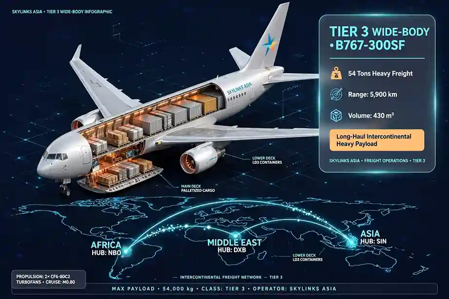
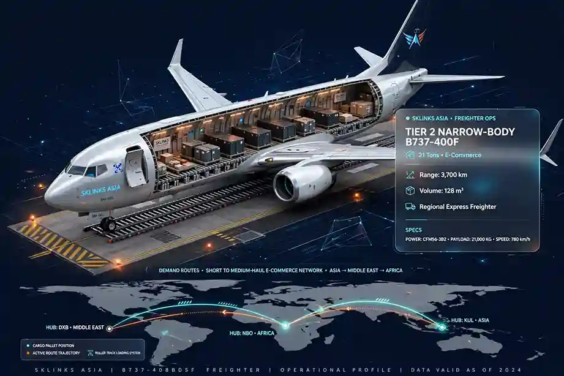
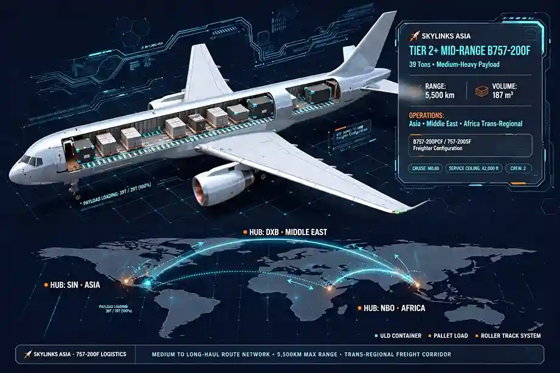
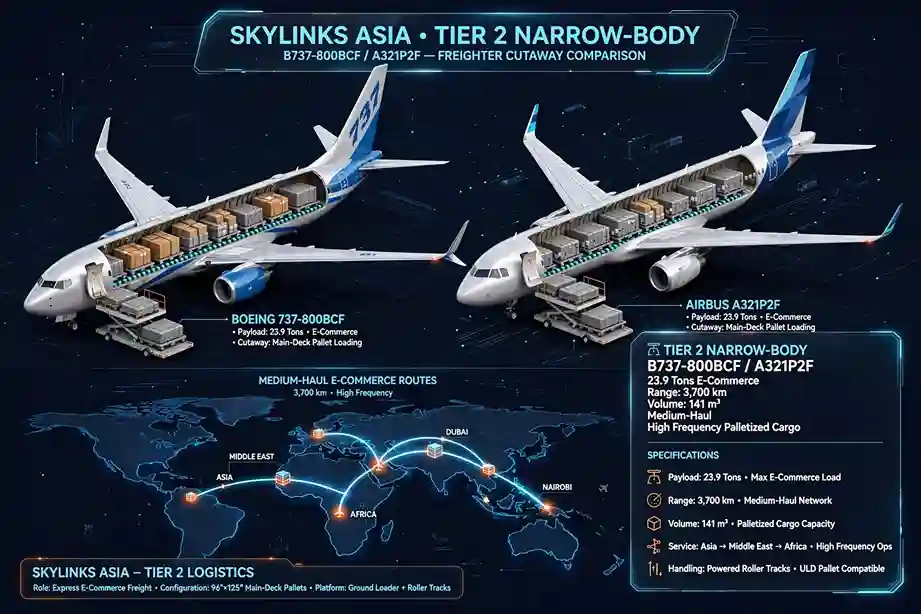

Quick answer: The right cargo aircraft depends on three things — how much your shipment weighs, how much space it takes up, and where it needs to land. Feeder turboprops handle remote and unpaved airstrips under roughly 8 tonnes; narrow-body freighters like the Boeing 737-800BCF and Airbus A321P2F cover regional and cross-border routes up to about 28 tonnes; widebody freighters carry heavy or high-volume freight on intercontinental trunk routes; and outsize aircraft like the Antonov An-124 handle cargo too large or heavy for anything else.
Choosing the right aircraft for a cargo charter comes down to balancing three variables: how much your shipment weighs, how much physical space it takes up, and how urgently it needs to move. Get that match wrong and you either pay for capacity you don't use or find out mid-negotiation that your preferred aircraft can't actually reach the airfield you need. This guide walks through Skylinks Asia's charter fleet by category, then takes a closer look at the two aircraft clients ask about most: the Boeing 737-800BCF and the Airbus A321P2F.
Our Fleet, by Category
Regional feeder turboprops (roughly 600 kg–8,000 kg payload): Cessna 208B Super Cargomaster, Pilatus PC-12, ATR 42/72, Saab 340, Dornier 228, Shorts 360. These aircraft exist for one reason: reaching places jets can't. Short or unpaved runways, island chains, and remote strips are all within reach thanks to short takeoff and landing (STOL) capability. They're also the fastest option to mobilize for urgent, lower-volume shipments — AOG aircraft parts, emergency medical supplies, or high-value components that can't wait for the next scheduled connection.
Standard and high-volume narrow-body jets (roughly 10–28 tonnes payload): Boeing 737-400F/800BCF, Airbus A320P2F/A321P2F, BAe 146-200F. This is the workhorse category for high-frequency express and regional cross-border trade — the step up once your cargo outgrows turboprop capacity but doesn't need a widebody's volume.
Mid-sized and heavy widebody freighters (roughly 35–140+ tonnes payload): Boeing 757-200F, 767-300SF, Airbus A330P2F, Boeing 777F, 747-8F. These cover intercontinental trunk routes, heavy industrial equipment, and cold-chain freight that needs both volume and range.
Outsize and special-mission transporters: Antonov An-124, Airbus BelugaXL. Reserved for aerospace components, energy-sector equipment, and humanitarian relief cargo too large or heavy for any standard freighter. Worth noting: sourcing an An-124 today generally means the Ukrainian-operated Antonov Airlines fleet — most Russian-operated examples have been grounded or stranded by sanctions since 2022, so availability and lead time can vary more than with other aircraft types.
Across all four categories, we lean heavily on modern passenger-to-freighter (P2F/BCF) conversions — aircraft that combine single-aisle fuel efficiency with modernized main-deck cargo doors and reinforced floors, giving flexible capacity on regional trade lanes without the cost of a purpose-built freighter.
Regional Feeder Charters: Connecting Short-Haul and Remote Corridors
Standard cargo jets face real physical and operational limits at smaller regional airports — runway length, surface type, and ground handling infrastructure all narrow the field. Skylinks Asia bridges that gap between major hubs and secondary destinations across Asia, the Middle East, and Africa with a versatile feeder fleet, typically flowing freight from a remote airstrip or island airport into a regional hub, then onward by narrow-body jet to its final destination.

Why clients choose feeder charter:
- Access to restricted airfields. High-wing turboprops with STOL capability reach short, narrow, or unpaved runways that are simply off-limits to jet aircraft.
- Rapid "go-now" response. For urgent AOG components, emergency medical supplies, or time-critical automotive parts, feeder charters solve delays that a scheduled network can't.
- Hub-and-spoke efficiency. Feeder aircraft collect freight from manufacturing nodes or island chains and feed it directly into primary international sorting gateways.
| Aircraft | Max Payload | Typical Range | Cargo Volume | Notable Feature |
|---|---|---|---|---|
| Cessna 208B Super Cargomaster | ~1.6–1.8 t | ~800 nm | ~330 cu ft | Single-engine; remote unpaved strips |
| Pilatus PC-12 NG | ~1.2–1.3 t | ~1,700 nm | ~330 cu ft | High-speed; wide rear cargo door |
| Dornier 228 | ~1.9–2.0 t | ~700 nm | ~270 cu ft | STOL design for rugged runways |
| Saab 340AQC | ~3.8 t | ~1,000 nm | ~1,100 cu ft | Reliable twin-turboprop feeder |
| Shorts 360 | ~3.2 t | ~800 nm | ~1,100 cu ft | Boxy hold maximizing volumetric load |
| ATR 42-300F / 72-500F | ~5.4–8.2 t | ~700–840 nm | Up to ~1,800 cu ft | Large cargo doors for palletized freight |
Figures above are typical published values and vary by specific airframe, configuration, and operator — we confirm exact numbers against your cargo profile before quoting.
Single-Aisle and Narrow-Body Freighters
Once cargo volumes exceed turboprop capacity, Skylinks Asia charters high-performance narrow-body freighters for intra-regional and cross-border trade:
- ATR 72-500F/600F — up to ~8.2 tonnes payload, ideal for high-volume regional and island connectivity.
- BAe 146-200F — up to ~10 tonnes payload; four quiet jet engines allow late-night operations at noise-restricted urban airports.
- Boeing 737-800BCF — up to ~23.9 tonnes payload, roughly 3,700 km range at full payload; a proven, widely available workhorse for regional cross-border freight.
- Airbus A321P2F — up to ~28 tonnes payload, roughly 3,800 km range at full payload; the current benchmark for high-volume, containerized narrow-body freight.
- Boeing 757-200F — roughly 39–40 tonnes payload; strong hot-and-high airfield performance for heavier narrow-body loads.
- Boeing 767-300ER-SF / Airbus A330P2F — roughly 50–65+ tonnes payload with 24 main-deck pallet positions; the practical step up to heavy regional and intercontinental freight.

Boeing 737-400F
Workhorse narrow-body freighter

Boeing 757-200F
Heavy narrow-body capability
Head-to-Head: Boeing 737-800BCF vs. Airbus A321P2F
These two aircraft dominate single-aisle freighter conversations, and clients often assume one has a clear edge over the other. The honest answer: it's closer than it looks, and the decision usually comes down to what your freight actually needs.

| Specification | Boeing 737-800BCF | Airbus A321P2F |
|---|---|---|
| Max structural payload | ~23.9 tonnes | ~28 tonnes |
| Containerized volume | ~141 m³ | ~208 m³ |
| Main-deck positions | 11–12 pallets | 14 pallets |
| Lower deck | Loose/bulk loading | Fully containerized (LD3-45 ULDs) |
| Range at full payload | ~2,000 nm / ~3,700 km | ~2,050 nm / ~3,800 km |
| Cruise speed | ~840 km/h | ~840 km/h |
| Best suited for | Denser general cargo, wide operator availability | High-volume, lightweight e-commerce and containerized freight |
A correction worth flagging clearly: range is not the differentiator between these two types — at full structural payload, both aircraft cover almost exactly the same distance, with the A321P2F actually holding a very slight edge. The real trade-off is volume versus payload density. The A321P2F offers roughly 45% more usable cargo volume and a fully containerized lower hold, making it the stronger choice for high-volume, lightweight freight like e-commerce parcels. The 737-800BCF carries a somewhat heavier structural payload relative to its volume and remains the more widely available airframe in most regional markets, which can matter more than a spec-sheet edge when you need an aircraft on short notice.
Why Fly With Skylinks Asia
As an independent air cargo charter broker, Skylinks Asia provides impartial, expert guidance to secure the most cost-effective aircraft for your shipment — with a 24/7 flight desk, full-spectrum sourcing from light turboprops to heavy widebody freighters, and specialized handling for dangerous goods, AOG emergencies, cold-chain pharmaceuticals, and remote-destination access.
Ready to dispatch your cargo? Contact the Skylinks Asia 24/7 Charter Desk for instant aircraft availability, route feasibility assessments, and a competitive quote. WhatsApp: +92 320 5487700.